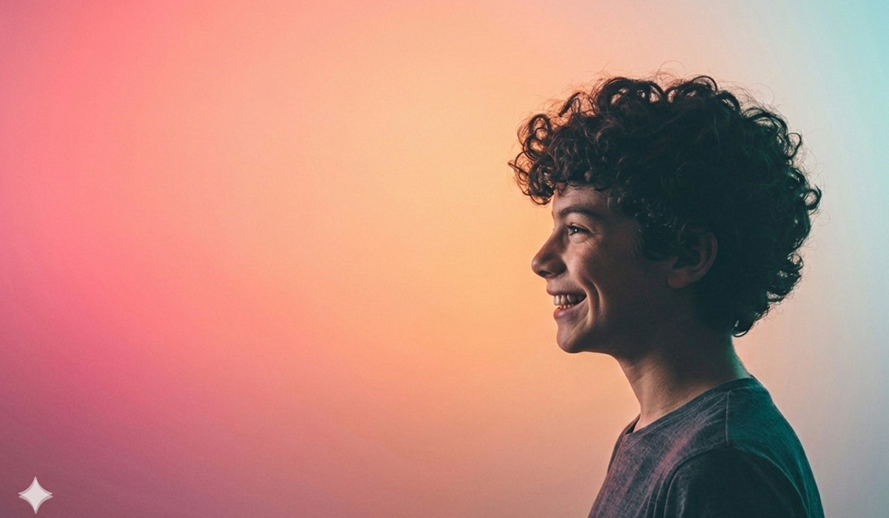

Il est biologiquement difficile pour un adolescent de s'arrêter seul. Pourquoi ? Parce que le cortex préfrontal (la zone du cerveau qui contrôle les impulsions et prend les décisions) est le dernier à arriver à maturité, autour de 25 ans !

Aidez votre enfant (de 5 à 15 ans) à maîtriser son temps d'écran, à retrouver sa concentration et à libérer son plein potentiel grâce à une approche basée sur les neurosciences.

Il est biologiquement difficile pour un adolescent de s'arrêter seul. Pourquoi ? Parce que le cortex préfrontal (la zone du cerveau qui contrôle les impulsions et prend les décisions) est le dernier à arriver à maturité, autour de 25 ans !
L'écran est devenu la seule source de détente de votre
enfant ?
Lui demander d'éteindre sa tablette provoque de
l'irritabilité, de la frustration ou des crises de colère ?
Son sommeil et sa motivation en souffrent ?
De la distraction au "Cerveau Actif"

Le cerveau de nos enfants est d'une plasticité
extraordinaire: il se remodèle en permanence en fonction de son environnement. C’est
grâce à la plasticité cérébrale : les connexions entre les neurones se créent, se renforcent ou
disparaissent selon ce qu’on fait tous les jours.
Agissons aujourd'hui sur les écrans pour sauver les cerveaux de demain
+500 clients nous font confiance

"En tant qu'éducateur, je vois quotidiennement l'impact dévastateur de la surexposition aux écrans sur l'attention des élèves. L'approche de l'Institut Dé-Connecté apporte une réponse concrète et nécessaire. C'est une véritable vision d'avenir pour notre système éducatif : préparer les adultes de demain à être maîtres de la technologie plutôt que d'en être dépendants. C'est un partenaire indispensable pour la réussite de nos jeunes."

"Avant, je me sentais souvent fatigué et sans motivation. Ce que j'ai préféré, ce sont les vidéos de motivation que l'on regarde et analyse. Aujourd'hui, après chaque projection, je me sens boosté et prêt à relever tous les défis. J'ai appris que mon cerveau est un outil puissant et c'est moi qui ai repris les commandes."

"Le changement a été radical. Non seulement les résultats scolaires de Diary se sont améliorés grâce aux techniques de concentration apprises durant les ateliers, mais il a surtout retrouvé le goût des activités réelles. Alors qu'il passait tout son temps sur les jeux vidéo, il s'intéresse aujourd'hui passionnément à la guitare. Il a retrouvé une discipline et une joie de vivre que nous pensions perdues. C'est une renaissance pour lui."
La réussite de nos enfants est un travail d'équipe. Téléchargez gratuitement notre outil "Charte Familiale : Cerveau en pleine forme !" et découvrez comment mettre en place des rituels simples :